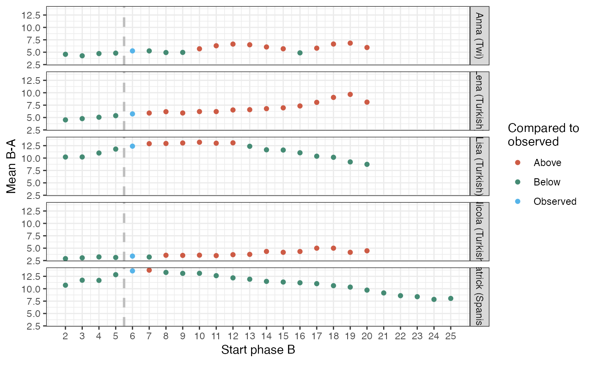

scplot_rand.RdRandom start position plot Plot of statistics for random phase B start positions
scplot_rand(
scdf,
statistic = "Mean B-A",
x_label = "Start phase B",
color_label = "Compared to\nobserved",
colors = c(Above = "coral3", Below = "aquamarine4", Observed = "#56B4E9", Equal =
"black"),
...
)A single-case data frame object.
A string with a the name of a statistic.
Defaults to Mean B-A. See rand_test() function for all options.
Character string with the x label.
Character string with the color label.
Named vector with color codes.
further arguments passted to the scan rand_test() function.
scplot_rand(scan::byHeart2011[1:5])
